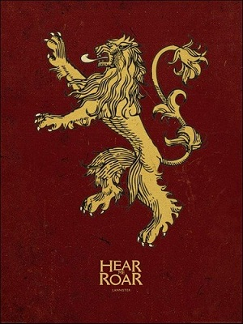
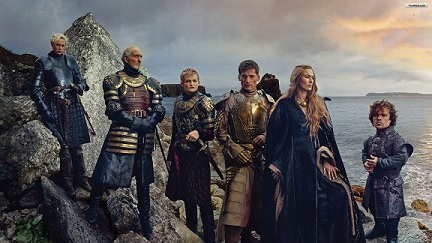

Os Lannisters
{kind=link}
A Casa Lannister de Rochedo Casterly é mais rica entre as Grandes Casas graças a suas minas de ouro, prata e o comércio. Seu principal castelo é Rochedo Casterly. O brasão dos Lannister é um leão dourado em campo carmesim e seu lema é Ouça-me rugir. O lema não oficial é Um Lannister sempre paga suas dívidas. O soberano da casa Lannister recebe, desde a chegada de Aegon, o Conquistador, o título de Protetor do Oeste.
História
Lann, o Esperto, apareceu vindo do leste. Alguns dizem que ele era um aventureiro ândalo do outro lado do mar estreito, embora isso tenha ocorrido um milênio antes da chegada dos ândalos a Westeros. Independentemente de suas origens, os relatos concordam que, de algum modo, Lann tirou os Casterly de seu Rochedo e o tomou para si. O método exato com o qual ele realizou isso permanece tema de conjecturas. Na versão mais comum da história, Lann descobriu uma passagem secreta para dentro do Rochedo, uma fenda tão estreita que teve de tirar as roupas e se besuntar com manteiga para se espremer nela. Uma vez lá dentro, no entanto, começou a fazer suas maldades, sussurrando ameaças nos ouvidos de Casterlys adormecidos, uivando na escuridão como um demônio, roubando tesouros de um irmão para plantá-los nos aposentos de outro, organizando ciladas e armadilhas. Com tais métodos, ele conseguiu colocar os Casterly uns contra os outros e os convenceu de que o Rochedo era assombrado por alguma criatura vil que nunca os deixaria viver em paz. Outros narradores preferem outras versões do conto. Em uma, Lann usa a fenda para encher o Rochedo de camundongos, ratos e outros animais nocivos e, dessa maneira, expulsa os Casterly. Em outra, ele contrabandeia um bando de leões para dentro da fortaleza, e Lorde Casterly e seus filhos são todos devorados, e, depois disso, Lann reivindicou a esposa e as filhas de sua senhoria para si. A versão mais devassa da história é que Lann entrou no castelo noite após noite para ir ter com as donzelas Casterly enquanto elas dormiam. Em nove meses, todas as donzelas deram à luz crianças de cabelo dourado, enquanto insistiam que nunca tiveram encontro carnal com um homem. O último conto, apesar de irreverente, tem certos aspectos intrigantes que podem dar uma pista da verdade do que ocorreu. O Arquimeistre Perestan acredita que Lann era algum tipo de partidário a serviço de Lorde Casterly (talvez um cavaleiro de sua casa), que engravidou a filha de sua senhoria (ou filhas, embora isso pareça menos provável), e persuadiu o pai a lhe dar a mão da garota em casamento. Se de fato isso ocorreu, presumindo (como devemos) que Lorde Casterly não tinha filhos legítimos, então, com o curso natural dos acontecimentos, o Rochedo passaria para a filha e, dessa forma, para Lann, após a morte do pai. Com certeza não há mais evidência histórica para isso do que para qualquer uma das outras versões. Tudo o que se sabe com certeza é que, em algum momento durante a Era dos Heróis, os Casterly desapareceram das crônicas e os até então desconhecidos Lannister aparecem em seu lugar, governando grandes partes das terras ocidentais a partir do Rochedo Casterly. Supostamente, Lann, o Esperto, viveu até a idade de 312 anos, e gerou uma centena de filhos ousados e uma centena de filhas ágeis, todos belos de rosto, com corpo bem formado e abençoados com cabelos ― tão dourados quanto o sol. Deixando tais contos de lado, as histórias sugerem que os primeiros Lannister eram férteis assim como belos, pois muitos nomes começam a aparecer nas crônicas, e, em poucas gerações, os descendentes de Lann se tornaram tão numerosos que nem o Rochedo Casterly poderia abrigar todos eles. Em vez de abrir novas passagens na rocha, alguns filhos e filhas de ramos menores da Casa partiram para fazer a própria morada em um vilarejo a poucos quilômetros de distância. A terra era fértil, o mar repleto de peixes e o lugar que escolheram tinha um excelente porto natural. Logo o vilarejo se transformou em uma vila, depois em uma cidade: Lannisporto.  Lann, o Esperto, nunca se intitulou rei, pelo que sabemos, embora algumas histórias contadas séculos mais tarde tenham lhe conferido o título postumamente. O primeiro rei Lannister de verdade que conhecemos é Loreon Lannister, também conhecido como Loreon, o Leão (vários Lannister ao longo dos séculos foram apelidados de o Leão ou o Dourado, por motivos compreensíveis), que fez dos Reyne de Castamere seus vassalos ao se casar com uma filha daquela casa, e derrotou o Rei Encapuzado, Morgon Banefort, e seus cativos em uma guerra que durou vinte anos. Loreon pode ter sido o primeiro Lannister a se autointitular Rei do Rochedo, mas foi um título que seus filhos e netos e os sucessores deles continuaram a usar por milhares de anos. Contudo, os limites de seu reino só atingiram todo o alcance após a chegada dos invasores ândalos. Os ândalos chegaram tarde às terras ocidentais, muito depois de terem tomado o Vale e derrubado os reinos dos Primeiros Homens nas terras fluviais. O primeiro senhor da guerra ândalo a marchar com um exército pelas montanhas encontrou um final sangrento nas mãos do rei Tybolt Lannister (conhecido, sem surpresa, como o Trovão). O segundo e o terceiro ataques foram enfrentados da mesma maneira, mas, enquanto cada vez mais ândalos começavam a seguir para oeste em bandos grandes e pequenos, o rei Tyrion III e seu filho Gerold II viram a condenação adiante. Em vez de tentarem expulsar os invasores, esses sábios reis arranjaram casamentos para os mais poderosos líderes guerreiros ândalos com filhas das grandes casas do oeste. Homens cautelosos e cientes do que ocorrera no Vale, eles tiveram o cuidado de exigir um preço por essa generosidade; os filhos e filhas dos senhores ândalos tão nobres quanto eles seriam entregues como protegidos e filhos adotivos, para servirem como escudeiros, pajens e copeiras em Rochedo Casterly e como reféns, caso seus pais provassem serem traiçoeiros. Com o tempo, os reis Lannister casaram seus filhos com os ândalos também; de fato, quando Gerold III morreu sem descendência masculina, um conselho coroou o marido de sua única filha, Sor Joffrey Lydden, que assumiu o nome Lannister e se tornou o primeiro ândalo a governar o Rochedo. Outras casas nobres nasceram de tais uniões, entre elas os Jast, os Lefford, os Parren, os Drox, os Marbrand, os Brax, os Serrett, os Sarsfield e os Kyndall. E assim, revitalizados, os Reis do Rochedo expandiram o reino ainda mais. Cerion Lannister estendeu seu governo tão a leste quanto o Dente Dourado e as colinas ao redor, derrotando três reis de menor importância quando fizeram aliança contra ele. Tommen Lannister, Primeiro de Seu Nome, construiu uma grande frota e trouxe a Ilha Bela para o reino, tomando a filha do último rei Farman como esposa. Loreon II organizou o primeiro torneio já visto nas terras ocidentais, derrotando cada cavaleiro que cavalgou contra ele. O primeiro Lancel Lannister (conhecido, é claro, como Lancel, o Leão) foi para a guerra contra os reis Gardener de Jardim de Cima e conquistou a Campina tão ao sul quanto Carvalho Velho, antes de ser derrubado em batalha. Seu filho, Loreon III, perdeu tudo o que o pai conquistara e ganhou o apelido zombeteiro de Loreon, o Manco. O rei Gerold Lannister, conhecido como Gerold, o Grande, navegou até as Ilhas de Ferro e retornou com uma centena de reféns nascidos no ferro, prometendo enforcar um deles cada vez que os homens de ferro ousassem atacar seu litoral. (Fiel à sua palavra, Gerold enforcou mais de vinte reféns.) Dizem que Lancel IV decapitou o rei nascido no ferro Harrald Meioafogado e seu herdeiro com um único golpe de sua grande espada de aço valiriano Rugido Brilhante, na Batalha da Ponta de Lann; ele morreu mais tarde, na batalha no Lago Vermelho, enquanto tentava invadir a Campina. A espada Rugido Brilhante foi empossada pelos reis Lannister no século anterior à Perdição, e dizem que o peso em ouro pago por ela era o suficiente para montar um exército. Mas ela se perdeu menos de um século depois, quando Tommen II a levou consigo ao navegar com uma grande frota até a arruinada Valíria, com a intenção de saquear a riqueza e a feitiçaria que ele tinha certeza de que ainda estavam lá. A frota nunca retornou, nem Tommen, nem Rugido Brilhante.O último relato sobre eles é encontrado em uma crônica volantina chamada A Glória de Volantis. Lá é afirmado que uma frota dourada ostentando o Rei Leão estivera na cidade livre em busca de suprimentos, e que os triarcas os encheram de presentes. A crônica alega que o Rei Leão jurou que metade de tudo o que encontrasse seria dado para os triarcas em troca de sua generosidade – e da promessa que enviariam uma frota em seu auxílio quando requisitasse. Depois disso, foi embora. No ano seguinte, a crônica afirma que o Triarca Marqelo Tagaros enviou uma esquadra de navios na direção de Valíriaa para ver se algum sinal da frota dourada podia ser encontrado, mas voltaram de mãos vazias. Alguns dos reis Lannister ficaram famosos por sua sabedoria, alguns por seu valor, todos pela generosidade, exceto, talvez, o rei Norwin Lannister, mais conhecido como Norwin, o Avarento. Mas Rochedo Casterly também abrigou muitos reis fracos, cruéis e débeis. Loreon IV era mais conhecido como Loreon, o Sem Juízo, e seu neto Loreon foi apelidado de Rainha Lorea, pois gostava de se vestir com as roupas da esposa e vagar pelo cais de Lannisporto disfarçado de prostituta comum. Depois dos reinados deles, o nome Loreon se tornou notavelmente menos comum entre os príncipes Lannister. Um monarca posterior, Tyrion II, era conhecido como o Atormentador. No fim, os domínios dos Lannister se estenderam da costa oeste até as nascentes do Ramo Vermelho e do Pedregoso, marcadas pelas passagens sob o Dente Dourado e da costa sul da Baía dos Homens de Ferro até a borda da Campina. Os limites das terras ocidentais hoje seguem os do Reino do Rochedo como era antes do Campo de Fogo, quando o rei Loren I Lannister, o Último, ajoelhou como rei e se ergueu como Lorde. Mas, em tempos passados, os limites eram mais fluidos, particularmente no sul, onde os Lannister com frequência entravam em disputas com os Gardener da Campina, e no leste, onde guerreavam contra os muitos reis do Tridente. Além disso, a linha costeira Lannister fica mais perto das Ilhas de Ferro do que de qualquer outro reino, e a riqueza de Lannisporto e seu comércio eram uma tentação constante para os saqueadores daquelas ilhas não civilizadas. Guerras entre os homens das terras ocidentais e os nascidos no ferro irrompiam a cada geração ou quase; mesmo durante os períodos de paz, os homens de ferro atacavam em busca de riquezas e de esposas do sal. A Ilha Bela ajudava a proteger a costa mais a sul; por isso, os Farman se tornaram conhecidos pelo ódio aos nascidos no ferro. A grande riqueza das Terras Ocidentais, é claro, se baseia primeiramente em suas minas de ouro e prata. Os veios de metal correm amplos e profundos, e há minas, até agora, que têm sido escavadas há mil anos e mais, e ainda não foram esvaziadas. Lomas Longstrider relata, que, mesmo tão longe quanto Asshai da Sombra, há mercadores que lhe perguntaram se era verdade que o Senhor Leão vivia em um palácio de ouro sólido e que pequenos agricultores coletavam uma riqueza em ouro simplesmente arando os campos. O ouro do oeste viajou longe, e os meistres sabem que não há minas em todo o mundo mais ricas do que as de Rochedo Casterly. A riqueza das terras ocidentais combinava, em tempos antigos, com a fome da Cidade Franca de Valíria por metais preciosos.Mesmo assim, parece não haver evidências de que os senhores de dragões chegaram a fazer contato com os senhores do Rochedo, Casterly ou Lannister. O Septão Barth especulou o assunto, referindo-se a um texto valiriano já perdido, sugerindo que os feiticeiros da Cidade Franca haviam previsto que o ouro de Rochedo Casterly os destruiria. O Arquimeistre Perestan levantou uma especulação diferente, mais plausível,sugerindo que os valirianos, nos tempos antigos, haviam chegado tão distante quanto Vilavelha, mas sofreram algum grande revés ou tragédia que os fez fugir de toda Westeros depois disso.
{kind=link}